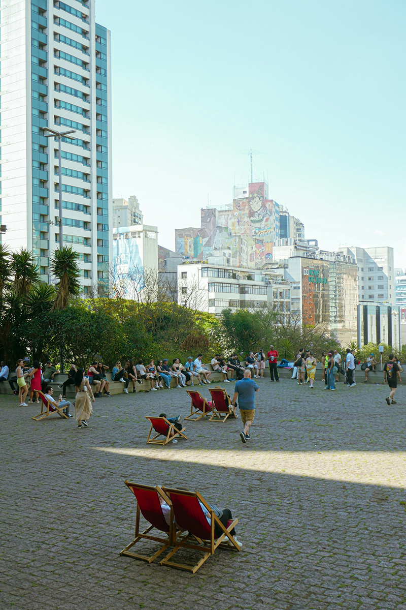

Nascemos da frustração de não conseguir turistar SP
O Respire SP nasceu com a ideia de transformar a forma como as pessoas conhecem São Paulo. Sabemos que a cidade é enorme, cheia de opções e, muitas vezes, difícil de explorar sem um direcionamento. Por isso, criamos uma plataforma que funciona como um guia turístico inteligente, capaz de sugerir roteiros personalizados de acordo com o seu estilo, interesses e momento. O nosso objetivo é facilitar essa escolha e tornar cada experiência mais simples, agradável e significativa.
Hoje somos o guia definitivo para quem quer conhecer São Paulo de verdade: com os olhos, o paladar e a alma de quem vive e respira a cidade.
